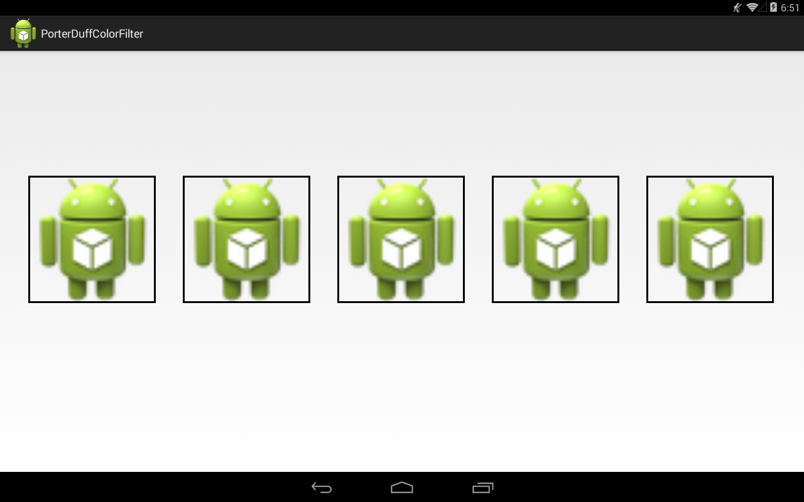
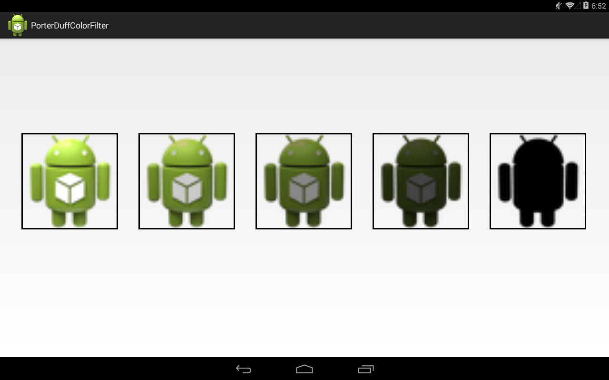
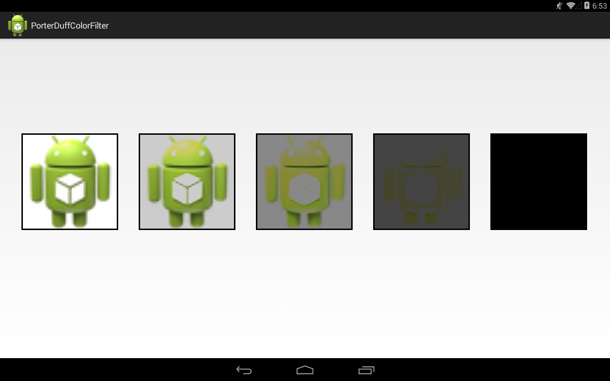
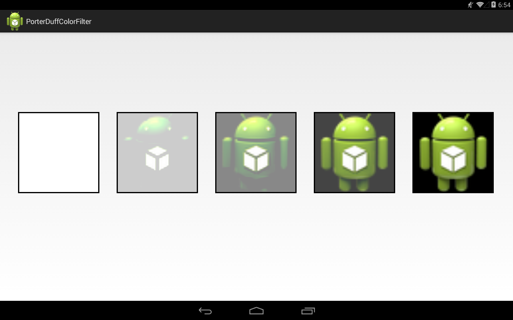
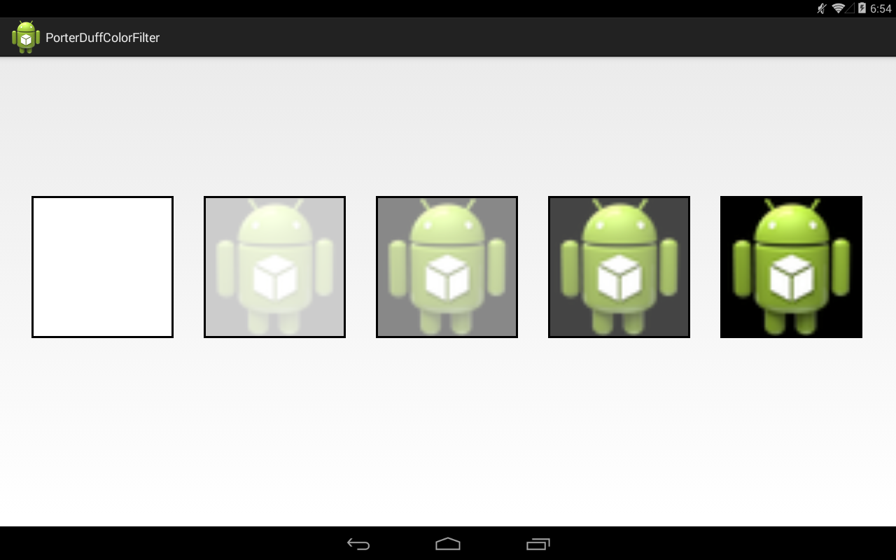
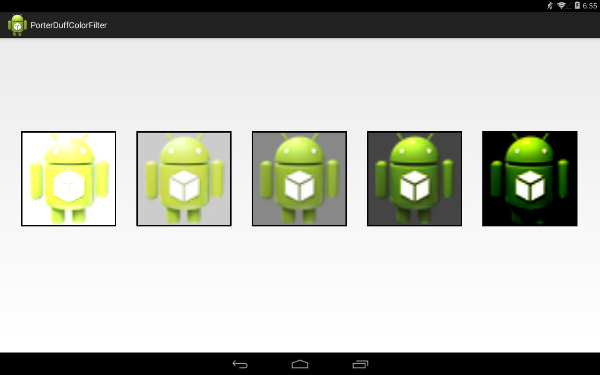
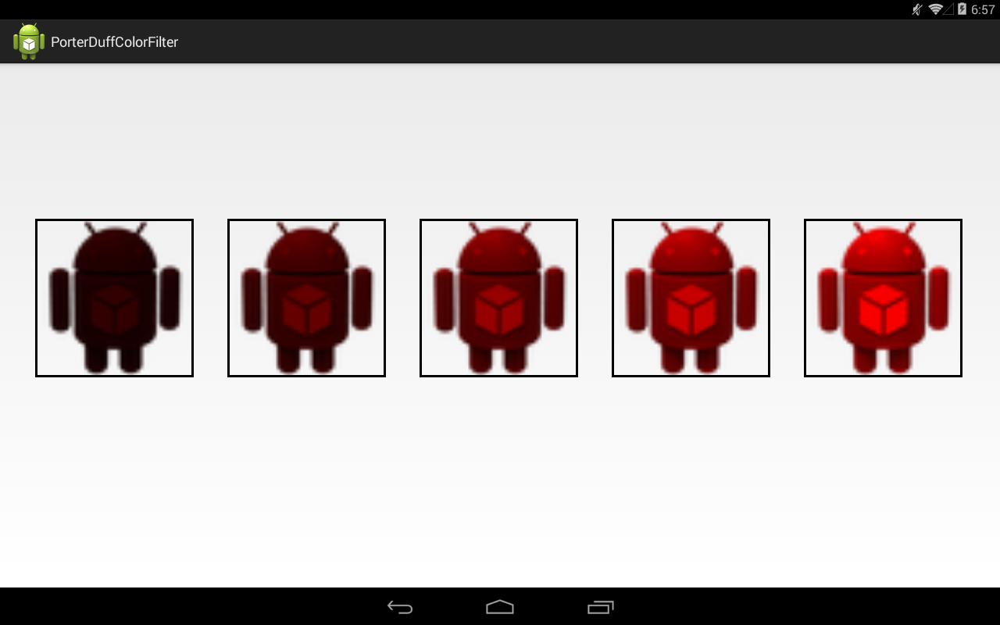

В этом уроке:
- используем PorterDuffColorFilter
Вернемся к теме ColorFilter, рассмотренной нами в Уроке 153. Там мы использовали два фильтра ColorMatrixColorFilter и LightingColorFilter. Сейчас рассмотрим третий – PorterDuffColorFilter. Если вы не читали Урок 154, то обязательно прочитайте, там я уже начал рассказывать про PorterDuff-режимы. Сейчас будет продолжение этой темы.
Механизм PorterDuffColorFilter похож на PorterDuffXfermode. Только вместо двух картинок у нас будет картинка и цвет. При создании объекта PorterDuffColorFilter вы указываете цвет, и он будет играть роль SRC-картинки полностью залитой этим цветом.
Посмотрим на примере.
Создадим проект:
Project name: P1551_PorterDuffColorFilter
Build Target: Android 4.4
Application name: PorterDuffColorFilter
Package name: ru.startandroid.develop.p1551porterduffcolorfilter
Create Activity: MainActivity
MainActivity.java:
package ru.startandroid.develop.p1551porterduffcolorfilter;
import android.app.Activity;
import android.content.Context;
import android.graphics.Bitmap;
import android.graphics.BitmapFactory;
import android.graphics.Canvas;
import android.graphics.Color;
import android.graphics.Paint;
import android.graphics.PorterDuff;
import android.graphics.PorterDuffColorFilter;
import android.os.Bundle;
import android.view.View;
public class MainActivity extends Activity {
@Override
protected void onCreate(Bundle savedInstanceState) {
super.onCreate(savedInstanceState);
setContentView(new DrawView(this));
}
class DrawView extends View {
Paint[] paints;
Paint paintBorder;
Bitmap bitmap;
int size = 200;
PorterDuff.Mode mode = PorterDuff.Mode.SRC;
int[] colorSrc = new int[] { Color.WHITE, Color.LTGRAY, Color.GRAY,
Color.DKGRAY, Color.BLACK };
public DrawView(Context context) {
super(context);
// необходимо для корректной работы
if (android.os.Build.VERSION.SDK_INT >= 11) {
setLayerType(View.LAYER_TYPE_SOFTWARE, null);
}
// создание bitmap картинки необходимого размера
bitmap = BitmapFactory.decodeResource(getResources(),
R.drawable.ic_launcher);
bitmap = Bitmap.createScaledBitmap(bitmap, size, size, true);
// создание массива кистей paints
paints = new Paint[colorSrc.length];
for (int i = 0; i < colorSrc.length; i++) {
Paint paint = new Paint(Paint.ANTI_ALIAS_FLAG);
// для каждой кисти свой PorterDuffColorFilter
// с цветом из массива colorSrc
paint.setColorFilter(new PorterDuffColorFilter(colorSrc[i],
mode));
paints[i] = paint;
}
// кисть для рамок
paintBorder = new Paint();
paintBorder.setStyle(Paint.Style.STROKE);
paintBorder.setStrokeWidth(3);
paintBorder.setColor(Color.BLACK);
}
@Override
protected void onDraw(Canvas canvas) {
canvas.translate(0, 200);
int delta = (canvas.getWidth() - size * paints.length)
/ (paints.length + 1);
// рисование bitmap
for (int i = 0; i < paints.length; i++) {
canvas.translate(delta, 0);
// используем кисти из массива paints
canvas.drawBitmap(bitmap, 0, 0, paints[i]);
canvas.drawRect(0, 0, size, size, paintBorder);
canvas.translate(size, 0);
}
}
}
}Переменная mode будет содержать текущий PorterDuff-режим. Эту переменную будем менять по ходу урока.
Массив colorSrc содержит 5 цветов: градация от белого до черного. Наш пример будет выводить сразу 5 результатов наложения картинки на цвет. Это придаст результату больше наглядности.
В конструкторе DrawView создаем картинку со стандартной Android-иконкой. Затем для каждого цвета из массива colorSrc создаем отдельную кисть со своим PorterDuffColorFilter.
В onDraw выводим bitmap используя созданный массив кистей.
Результат:
![]()
Напомню, что цвет указанный при создании PorterDuffColorFilter – это SRC-картинка, а bitmap – DST-картинка.
Т.к. мы указали режим PorterDuff.Mode.SRC, то мы видим только SRC-картинку т.е. цвет.
Поменяем значение mode на PorterDuff.Mode.DST.

Теперь мы во всех вариантах видим только DST-картинку, т.е. bitmap.
Эти простые PorterDuff-режимы мы уже рассматривали на прошлом уроке. Теперь посмотрим на более сложные.
MULTIPLY
Перемножение SRC и DST цветов. Умножение цвета на белый (1,1,1) не меняет цвет, умножение на черный (0,0,0) – делает его черным.

DARKEN
При расчете пикселов результата выбирается наиболее темный из двух исходных: SRC и DST.

LIGHTEN
При расчете пикселов результата выбирается наиболее светлый из двух исходных: SRC и DST.

SCREEN
Похож на MULTIPLY, только наоборот. При скрещении цвета с белым получается белый, при скрещении с черным – цвет не меняется.

OVERLAY
Этот режим, к сожалению, не могу прокомментировать. Похоже на изменение контрастности картинки.

Рекомендую поэксперементировать с цветами и использовать не белый/серый/черный, а оттенки какого-либо другого цвета. И посмотреть результат при разных режимах.
Например, красный цвет:
int[] colorSrc = new int[] { Color.rgb(50, 0, 0), Color.rgb(100, 0, 0),
Color.rgb(150, 0, 0), Color.rgb(200, 0, 0),
Color.rgb(250, 0, 0) };c режимом MULTIPLY будет выглядеть вот так:
